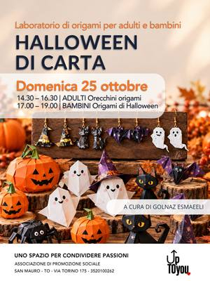
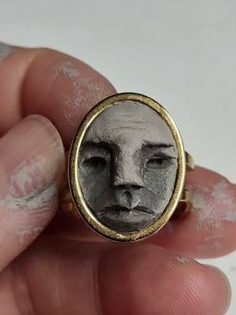
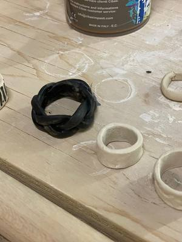
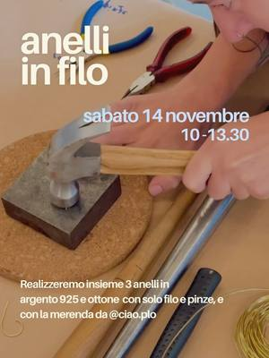
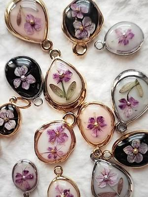
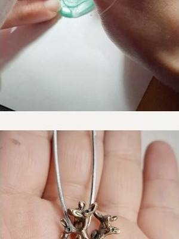
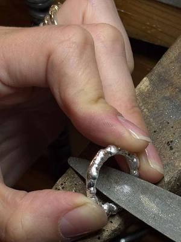
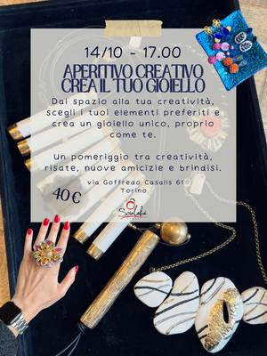

Jewellery workshops in Turin and around
Workshops to make jewellery in silver, brass, porcelain and other materials in Turin and around.
Search all workshops8 activities coming up · updated on 25 October 2026

sun25octJewelleryPaper Halloween: origami earringsSunday 25 October, 14:30–16:30San Mauro Torinese (TO)with Golnaz Esmaeili at upTOyou
sun25octCeramicsStrange Creatures: clay jewellerySunday 25 October, 15:00–17:00San Donato (TO)with Samaneh Vahabi at Orso Objetos
sun25octCeramicsJewellery workshop: porcelain earringsSunday 25 October, 15:00–17:00San Salvario (TO) · 48 €with Pottery Lab
sat14novJewelleryWire rings: silver and brassSaturday 14 November, 10:00–13:30San Salvario (TO)with Manibargè
sat21novJewelleryBotanical jewellery: real flowers in resinSaturday 21 November, 14:30–18:30Villar Perosa (TO) · 40 €with Riflessi di Casa
sun13decJewelleryMake your own jewellery: lost-wax bronzeSunday 13 December, 10:30–12:30Cuneo (CN) · from 50 €with Simona di Matteo at Atelier Crea-Arti
dateof your choiceJewellerySilver ring: set with a natural stoneDate of your choiceSan Salvario (TO) · 131 €with Spazio Incompleto Gioielli
dateof your choiceCeramicsJewellery course: porcelain and clayDate of your choiceCit Turin (TO) · 125 €with Scialabà